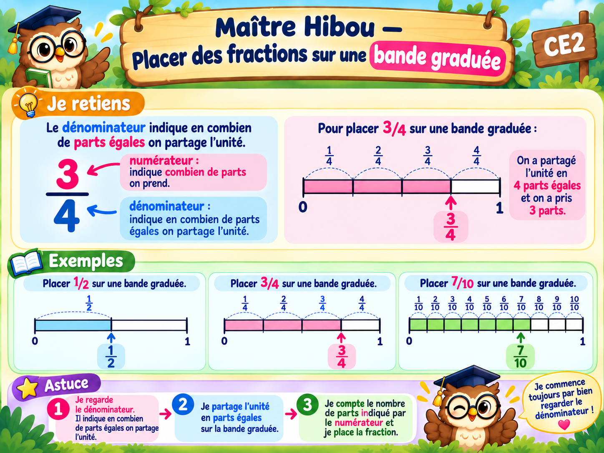

À toi de jouer !
10 exercices. Vérifie ta réponse avant de passer à la suivante.
Touche la graduation correspondant à la fraction.
Bravo ! Tu as réussi les 10 exercices.
Tu peux maintenant valider ta leçon.

10 exercices. Vérifie ta réponse avant de passer à la suivante.
Tu peux maintenant valider ta leçon.